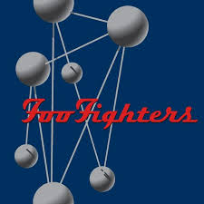
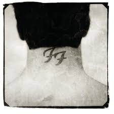
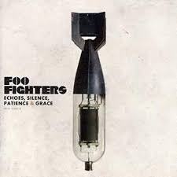
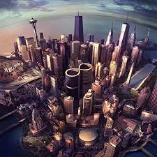
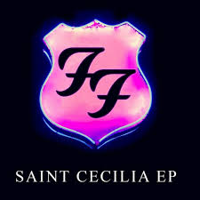
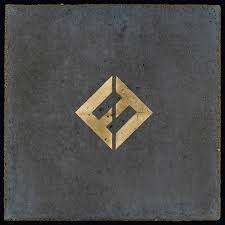

Inicios y discografía
Inicios
La historia de Foo Fighters empieza cuando Dave Grohl, antiguo miembro de Scream, es contratado para hacer las labores de batería en el por aquel entonces desconocido grupo de grunge Nirvana. El talento de Kurt Cobain hizo que el primer disco de Grohl en dicha formación, Nevermind, fuese un auténtico éxito en el ámbito "mainstream", gracias a lo cual la banda subió a los primeros puestos en las listas de ventas de todo el mundo. Durante el tiempo en el que fue miembro de Nirvana, Dave, escribió varias canciones por su cuenta, algunas de las cuales no le parecieron del todo acorde al sonido de la banda. Más tarde, en 1997, llegó a decir "Me sobrecogían las canciones de Kurt Cobain, y yo estaba intimidado. Así que pensé que lo mejor era que me guardara las canciones para mí." Con estas canciones, que no mostró a sus compañeros, decidió por su cuenta grabar una demo bajo el seudónimo Late!, nombrando el álbum como Pocketwatch La edición de este demo se hizo en apenas cien casetes que Grohl repartió únicamente entre sus amistades y sin pretensión alguna de editarlo comercialmente.
Tras la muerte de Kurt Cobain y la consiguiente desaparición de Nirvana, Grohl decidió seguir adelante con su carrera musical. Regresó al estudio para grabar por cuenta propia otras cuantas canciones más, esta vez bajo el seudónimo de Foo Fighters. Él mismo grabó todos los instrumentos en todas las canciones, a excepción de una guitarra de acompañamiento cortesía de su amigo Greg Dulli (guitarrista de Afghan Whigs) Al igual que hizo con la anterior, editó esta grabación en casete y la repartió entre sus amigos. Sin embargo, en esta ocasión recibió muy buenos comentarios e incluso una de las canciones, This is a Call, empezó a tener rotación en la radio angelina. Es por ello que decidió formalizar lo que hasta el momento era sólo un proyecto, reclutando a otros músicos para formar oficialmente una banda además de crear su propio sello discográfico: Roswell Records, subsidiaria de Capitol Records.
Fue así como se dio inicio a los Foo Fighters, cuyo nombre proviene de la forma en que llamaban los pilotos aliados a los objetos voladores no identificados (OVNI) durante la Segunda Guerra Mundial. En el 2009, Dave Grohl contó en el programa VH1 Storytellers que el nombre de "Foo Fighters" fue pensado para que quedara en la mente de la gente, algo atractivo, como "Led Zeppelin", pero que no le hubiese puesto "Foo Fighters" a la banda si hubiera sabido que tendría tanto éxito.
Discografia
- The Colour and the Shape (1997-1999)
Tras el gran éxito que tuvo la banda, estuvieron de gira durante varios meses presentándose por todo Estados Unidos y algunas ciudades de Europa, siendo especialmente notable el éxito que consiguieron en Inglaterra. Tras casi dos años de gira exhaustiva comenzaron a grabar en 1997 su segundo álbum, The Colour And The Shape, el cual contiene grandes éxitos como Monkey Wrench, My Hero, Hey, Johnny Park! y Everlong. Para la grabación del disco, William Goldsmith (batería) fue requerido sólo en Doll y Up in Arms, lo que provocó su abandono del grupo después de varias discusiones. Otras fuentes citan enfrentamientos entre el productor Gil Norton y Goldsmith los que provocaron la salida de este último, dejando a Grohl en este puesto para grabar el resto de las canciones.6 La crítica lo proclamó como uno de los mejores discos de rock de la década de los 90. Buscando un sustituto que ocupase el puesto de batería en el grupo en la gira, Grohl llamó a Taylor Hawkins (exmiembro de Hot Chocolate, la banda en vivo de Alanis Morissette) para preguntarle si conocía a alguien que pudiese ocupar el lugar de Goldsmith, pero, para sorpresa de Grohl, Hawkins se ofreció para tomar las labores de batería, y así grabó las últimas canciones del disco. Tras el lanzamiento, asimismo, Pat Smear (guitarrista) decidió dejar la banda debido al agotamiento de esta nueva gira, por lo cual Dave contrató a Franz Stahl (excompañero de Grohl en la banda Scream) en las guitarras, quien fue despedido antes de la grabación del siguiente disco por "diferencias creativas".
- There Is Nothing Left to Lose (1999-2001)
En 1999, Grohl decidió tomar un descanso y regresar a su Virginia natal. Después de un par de meses allí, convirtió el sótano de su casa en un estudio de grabación donde comenzaron a trabajar en lo que se convertiría en su tercer álbum, There is Nothing Left to Lose. Este disco contaría con un tono mucho más melódico que sus predecesores. En éste se publicaron temas como Breakout (que se incluiría en la banda sonora de la película Me, Myself & Irene), Next Year (banda sonora de la serie televisiva Ed), Generator, Stacked Actors y Learn to Fly (número 1 en la lista del Billboard)
Después de la salida de Stahl, la banda probó a un gran número de guitarristas, dando finalmente con Chris Shiflett, exintegrante de No Use for a Name y Me First and the Gimme Gimmes. Pero la banda ya estaba terminando de grabar el álbum, razón por la cual no aparece en los créditos del mismo.
Ese mismo año Foo Fighters estableció contacto con la banda de rock Queen. Brian May colaboró en la segunda versión que realiza Foo Fighters del tema de Pink Floyd Have a Cigar, que apareció en la banda sonora de la película Misión: Imposible II Cuando Queen entró en el salón de fama del rock en marzo de 2001, Grohl y Hawkins fueron invitados a tocar junto con la mítica banda el tema Tie your Mother Down. Foo Fighters tocó con ellos en otras ocasiones, incluido el VH1 Rock Honors y su concierto en el Hyde Park de Londres.
En 2000, la banda reconoció en público su apoyo a Alive & Well, una organización estadounidense que no cree que el virus de inmunodeficiencia humana sea la causa del sida, además de cuestionar la validez de los controles para detectar el virus y negar el uso de medicamentos para frenar las causas de la enfermedad. El bajista Nate Mendel fue quien recomendó el libro de la fundadora de la entidad, Christine Maggiore, al resto de los miembros de la banda.
Ese mismo año, Mendel organizó un concierto en beneficio de la organización,8 así como colaboraciones del documental promovido por dicha sociedad llamado The Other Side of AIDS (la otra cara del sida) - One by One (2002-2004)
A finales de 2001, y ya con su nuevo guitarrista, la banda regresó a Virginia para trabajar en un nuevo disco que no dejó satisfechas las expectativas de Grohl, razón por la cual decidió abandonar las sesiones de grabación y tomar un receso. Durante este tiempo grabó las baterías en el disco Songs for the Deaf de Queens of the Stone Age, saliendo también de gira con ellos durante 2002. Shifflet trabajó también en un proyecto propio durante este tiempo, un grupo de punk llamado Jackson (ahora Jackson United). Habiendo retomado fuerzas, la banda regresó al estudio para volver a grabar en tan sólo dos semanas el disco que tenía preparado antes de su etapa en Queens of the Stone Age, titulado One by One. Esta grabación está compuesta por canciones como All My Life, Low, Overdrive, Comeback, Have it All y Times Like These. El vídeo de Low fue tremendamente criticado y censurado en muchas emisoras del mundo, ya que en él aparecía Grohl, junto con su amigo Jack Black, visiblemente borracho y posando en posturas obscenas. Este disco les sirvió para consolidarse definitivamente como una de las propuestas de rock alternativo más importantes y vigentes de nuestros días, viajando nuevamente de gira por todo el planeta.
La banda se suele mantener alejada de temas políticos, pero en 2004, Grohl decidió apoyar al candidato para la presidencia de los Estados Unidos John Kerry; a raíz de este suceso, toda la banda se unió a la propuesta de Grohl y realizó conciertos para su campaña. Entonces, su contrincante, George W. Bush, utilizó dos de sus canciones, Times like These y My Hero, para sus campañas, declarándose fanático de la banda, cosa que a Dave Grohl no le agradó en absoluto. Este suceso fue el que inspiró el título de su siguiente álbum, In Your Honor. - In Your Honor (2005-2007)
Es el quinto álbum de Foo Fighters, editado el 13 de junio del 2005 en el Reino Unido y un día después en los Estados Unidos. Se trata de un álbum doble, con un primer disco que contiene las típicas canciones de rock de Foo Fighters y un segundo que incluye canciones más acústicas y tranquilas.
Descrito por el líder, Dave Grohl, como el disco "definitivo" de Foo Fighters, In Your Honor se ha encontrado en general con críticas receptivas. Entró en las listas de USA y Reino Unido en el segundo puesto, detrás de X&Y de Coldplay, con las ventas iniciales más fuertes de su carrera hasta ahora. In Your Honor vendió 310 500 copias en su primera semana en Estados Unidos.
In Your Honor cuenta con un número de invitados especiales en su segundo disco, como Norah Jones, John Paul Jones (de Led Zeppelin) y Josh Homme, del grupo Queens of The Stone Age. Dave Grohl ha descrito la presencia como artista invitado de John Paul Jones como "la segunda cosa más grande que me ha pasado en la vida". Hay también una edición especial, un disco dual que contiene un "making of", y el segundo disco con sonido 5.1 surround.
En los Estados Unidos, se usó el control de protección contra copias MediaMax CD-3 causando alguna reacción negativa de los seguidores. Esta protección contra copia solo aparece en la versión de CD estándar, pero no en la versión del Disco Dual. - Echoes, Silence, Patience & Grace y Greatest Hits (2007-2009)
El sexto disco de Foo Fighters fue lanzado el 25 de septiembre de 2007 bajo el título de Echoes, Silence, Patience & Grace y fue producido por el mismo productor de su gran álbum, The Colour and the Shape. Fue presentado con el single The Pretender, que ya había alcanzado una gran popularidad un mes antes de la edición del álbum.
El disco cuenta con doce temas y la colaboración de la guitarrista Kaki King en el tema The Ballad of the Beaconsfield Miners, dedicado a unos mineros atrapados en una mina de Australia que pidieron un MP3 con música de Foo Fighters, hasta ahora único tema instrumental en la discografía del grupo. Otra de las peculiaridades del álbum son los coros, llevados a cabo por Taylor Hawkins en lugar del propio Grohl, quien venía ejerciendo esta labor en los anteriores trabajos de la banda.
Una de sus canciones, Let It Die, está inspirada, según Grohl, en "la caótica relación entre Kurt Cobain y Courtney Love"
Opinando respecto al CD, Dave Grohl dijo: "Suena definitivamente como un álbum de Foo Fighters, pero nos estamos moviendo en diferentes direcciones"
El vídeo musical Long Road to Ruin se estrenó el 1 de noviembre con su single publicado el 3 de diciembre. En el vídeo aparece la actriz Rashida Jones con quien había colaborado previamente con otros temas de la banda.
En la 50ª edición de los premios Grammy, la canción The Pretender consiguió el premio en la categoría de Mejor Interpretación de Hard Rock. Además, el álbum que la contiene, Echoes, Silence, Patience & Grace, consiguió el galardón en la categoría de Mejor Álbum de Rock. No solo alcanzó el tope de las listas en los UK Albums Chart, sino que es su disco más vendido en el Reino Unido. Live at Wembley Stadium es un DVD en vivo de Foo Fighters, grabado durante dos actuaciones en el Estadio de Wembley, en Londres, los días viernes 6 y sábado 7 de junio de 2008. El DVD incluye una combinación de temas de las dos noches, en donde tocaron los grandes éxitos de toda su carrera musical. Se hacen notar las colaboraciones de John Paul Jones y Jimmy Page como invitados especiales en los temas Ramble on y Rock and Roll.
El 17 de septiembre de 2008, Dave Grohl anunció en The Chris Moyles Show que la banda iba a tomar un largo descanso de la música. Así, dijo, ellos podrían volver con un nuevo sentido de propósito. Grohl también informó a los seguidores que no esperaran nueva música por un tiempo. "Nunca nos tomamos un largo descanso, creo que es el momento" comentó Grohl "Después de hacer Wembley, no volveremos allí por diez años porque ya hemos tocado para todos. Estuvimos en el Reino Unido todos los años, cada verano, y creo que es tiempo de tomar un descanso y volver cuando la gente realmente nos extrañe." La banda está en actividad desde su formación en 1995.
Sin embargo, el 12 de febrero de 2009 Hawkins niega que la banda estuviera planeando tomar un descanso de larga duración. "Nos hemos reunido y expuesto nuestras ideas", dijo. "Sólo ideas básicas y lo que probablemente hagamos durante el próximo año hasta que tengamos un registro de las ideas es tomar nuestro tiempo y dejar a todo el mundo disfrutar de otras cosas" - de sus familias y eso. "Yo diría que quizás después del verano nos meteremos en el estudio y empezaremos a materializar esas ideas".
El 4 de julio del 2009, en un concierto exclusivo, la banda anunció que una compilación de sus mejores éxitos iba a ser lanzada el 3 de noviembre del mismo año. Ese mismo día presentaron también un nuevo tema titulado Wheels, que llegó a las radios el 23 de septiembre.
El 30 de octubre, Foo Fighters realizó un concierto en vivo desde su propio estudio (estudio 606), presentando su nuevo disco. Este recital fue transmitido en directo por Internet y tuvo la gran cantidad de casi 20 000 espectadores.
Finalmente, el 3 de noviembre del 2009, la banda lanzó el álbum Foo Fighters Greatest Hits, con un total de 16 canciones entre las cuales se encuentran dos nuevas y una versión acústica del clásico Everlong. Por otro lado, el 4 de septiembre Dave Grohl declaró: "Este Greatest Hits es el final de algo... es tiempo de movernos hacia otro capítulo u otra fase. Quizás sea diferente, de otra manera. No lo sé, es bueno no saber que va a venir después. Vamos a hacer algunos shows en Europa, pero, después de eso, es como que ni siquiera sé si voy a seguir viendo a estos chicos. Así que es medio raro". - Wasting Light (2010-2012)
En 2010 Dave Grohl había confirmado que la banda estaba preparando un nuevo disco y que entrarían a grabarlo durante el mes de septiembre. “Comenzamos a escribir las canciones y en septiembre las vamos a grabar, de alguna manera la vida está llena de música“, dijo Grohl, que no reveló detalles acerca del título ni fecha de salida del álbum.
En la cuenta de Twitter16 del grupo, se mostraron distintos nombres de canciones (Miss the Misery, Dear Rosemary, These Days, Walk, A Matter of Time, Bridge Burning, entre otras) y partes de letras de canciones, además de fotografías de los mismos integrantes, en las que también se veía a Pat Smear colaborando, e incluso a Krist Novoselic además de Butch Vig como productor, igual que hizo 20 años atrás con Nevermind de Nirvana.
Tras ello, el grupo anunció su regreso de manera oficial, realizando varios show, inclusive realizó un show "secreto" en donde se mostró algunas de sus nuevas canciones del disco que se prepara.
El 3 de enero de 2011, Foo Fighters anunció que el disco estaba terminado,17 Dave Grohl dijo "Tenemos once canciones y en todo el disco no existe ni una sola balada", "El proceso fue tan simple. Lo hicimos realmente en mi garaje. El hecho de que lo hayamos hecho todo sin utilizar computadoras, lo hizo muy simple. Simplemente suena gigantesco" y se refiere al trabajo con Butch: "Butch nos jura que se ha divertido más haciendo este disco, que cualquier otro anterior que haya hecho en su vida... esos son un montón de discos".
El 17 de enero, la banda publicó un fragmento de una nueva canción, Bridge Burning, y el 1 de febrero hizo lo mismo con otra nueva canción, Miss the Misery. Fue confirmado que ambas canciones aparecerían en el nuevo álbum.
El 28 de enero, la banda tocó el nuevo álbum entero en el Velvet Jones, en Santa Barbara, California. El show fue anunciado previas horas antes de realizarse, pero eso no fue problema para la asistencia, pues se vendieron todas las entradas en tan sólo una hora.
El 13 de febrero, la banda publicó un video musical de White Limo, una nueva canción. El vídeo cuenta con la participación del bajista y cantante de Motörhead, Lemmy Kilmister, y de la esposa de Dave Grohl, Jordyn.
El 15 de febrero, la banda anunció que el nombre del nuevo álbum finalmente será Wasting Light y no Back + Forth como se había rumoreado anteriormente. Este último título es también el nombre de una nueva canción. El nuevo álbum salió a la venta el 12 de abril de 2011.
Por otro lado, la banda ya había confirmado su participación en varios conciertos y festivales musicales este verano, tales como el Hurricane Festival, el Pinkpop Festival, entre otros. Esto para promocionar la salida de su nuevo álbum.
El 5 de abril de 2011 se estrenó Back & Forth, un documental de Foo Fighters grabado durante la producción de Wasting Light.
Medium Rare es un LP que fue lanzado con motivo del Record Store Day, el 16 de abril de 2011. El disco incluye varias versiones que ha hecho la banda durante su carrera de bandas y artistas como The Wings, Prince y Pink Floyd. Tras haber lanzado el LP, se publicaron una versión en CD, para los suscriptores de la revista Q magazine.
Foo Fighters canceló los conciertos de Japón y Singapur por un problema vocal de Dave Grohl: los médicos le aconsejaron que debía empezar un tratamiento y se vieron forzados a cancelar las cuatro fechas en Japón y la de Singapur, la cual hubiera sido la primera en aquel país.
El 1 de abril, Foo Fighters inicia su primer tour sudamericano: se presentaron por primera vez en Chile, en el festival Lollapalooza Chile, en un recital de casi tres horas. Luego se viajaron a Argentina, al Quilmes Rock, el 3 y 4 de abril. Y concluyeron su tour por Sudamérica en Brasil, en el festival Lollapalooza Brasil, el 7 de abril. En los tres países, encabezaron los respectivos festivales.
Tras finalizar la gira de su último disco Wasting Light, el 2 de octubre, a través de las redes sociales, la banda anunció una pausa indefinida para poder descansar y pasar el tiempo con sus familias, dejando en claro que en un futuro volverían a juntarse. - Sonic Highways (2013-2014)
A pesar de anunciar inicialmente un descanso después de apoyar Wasting Light, Grohl declaró posteriormente en enero de 2013 que la banda había comenzado a escribir material para un octavo álbum de estudio. El 20 de febrero de 2013, en los Premios Brit, Grohl dijo que estaba volando de vuelta a América al día siguiente para empezar a trabajar en el próximo álbum.24 En una entrevista con XFM, anunció que su próximo álbum había sido programado para ser lanzado en 2014. Grohl dijo: «Bueno, voy a decir que hemos estado en nuestro estudio escribiendo y en las últimas semanas hemos escrito un álbum y vamos a hacer de este álbum de una manera que nadie había hecho nunca antes y que bastante emocionado al respecto... es un poco retirado - No está listo para tener éxito ahora mismo - pero creo que el próximo año va a ser un muy buen año para los Foo Fighters, sin lugar a dudas».
El 6 de septiembre de 2013, Shiflett publicó una foto en su cuenta de Instagram, indicando que estaban grabando 13 canciones para el nuevo álbum y más tarde describió el álbum en una entrevista como «la hostia de divertido».25 Rami Jaffee grabó piezas para tres canciones, una de las cuales titulada In The Way.26 Butch Vig, quien trabajó con la banda en Wasting Light, confirmó a través de Twitter, a finales de agosto 2013, que estaba produciendo el álbum.
La banda confirmó que pondrá fin a su pausa y tocó dos shows en la Ciudad de México, México, el 11 y 13 de diciembre de 2013. El 31 de octubre de 2013, apareció un vídeo en el canal oficial de YouTube de Foo Fighters que muestra a un motociclista; más tarde, se muestra como el actor Erik Estrada, la entrega de cada uno de los miembros de la banda una invitación para tocar en México.
El 16 de enero de 2014 una imagen se envió a los Foo Fighters de la página de Facebook con varias cintas maestras con una etiqueta "LP 8."
El productor Butch Vig dijo que el nuevo álbum está "casi completo". Vig, quien también toca la batería en la banda Garbage y se cree que esta coproduciendo con Steve Albini dice que la banda está experimentando con técnicas de grabación retadoras para mantener a todos enfocados, asemejándose al proceso de grabación del álbum de 2011 Wasting Light, que fue hecho en el garaje de Grohl. En una entrevista con Kerrang dijo: "Hemos estado grabando en diferentes lugares pero ya casi terminamos con las grabaciones y van bien. Suena diferente- hemos experimentado con mezclas durante este proceso de grabación, que le van a dar a este disco un sonido y una sensación diferentes. Ha sido un reto pero también ha sido emocionante". Hablando con Zane Lowe de BBC Radio 1, Grohl dijo "Sé como suena y honestamente creo que todo el concepto tomará a la gente por sorpresa y suena loco".
El 12 de agosto de 2014, la compañía discográfica de la banda anunció el lanzamiento de su octavo álbum, titulado Sonic Highways, disponible desde el 10 de noviembre en dos versiones físicas, CD y vinilo de 180 gramos; ese último viene en una selección de diez diferentes portadas que incluyen ocho variantes temáticas por cada una de las ciudades en las que fue grabado: Austin, Chicago, Los Ángeles, Nashville, Nueva Orleans, Nueva York, Seattle y Washington D.C. - Saint Cecilia EP (2015)
Saint Cecilia fue lanzado como una descarga gratuita el 23 de noviembre de 2015. Inicialmente pensado como un signo de gratitud a los seguidores del grupo, el EP también se dedicó a las víctimas de los atentados terroristas en París. Termina con la espera de 7 Corners, canción sin terminar que llevaba años dentro de las posibles canciones para distintos discos de Foo Fighters, pero esta vez la han llamado Neverending Sigh
- Concrete and Gold (2017-presente)
El 15 de septiembre de 2017, Foo Fighters publica el que sería su noveno LP, Concrete and Gold, la banda lo describe como "donde los extremos del hard rock y la sensibilidad del pop chocan". De este álbum se extrajeron dos sencillos, los cuales serían "Run" y "The Sky is a Neighbourhood". El álbum debutó como #1 en el Billboard 200, siendo la segunda vez que la banda logra esto, al hacerlo con anterioridad con "Wasting Light", en 2011. El álbum cuenta con las colaboraciones de Paul McCartney en la canción "Sunday Rain" tocando la batería y de Justin Timberlake en "Make it Right" haciendo los coros. En este álbum aparece por primera vez el tecladista Rami Jaffee como miembro oficial de la banda.